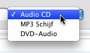
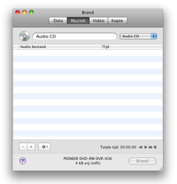
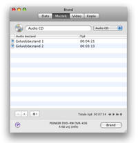
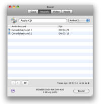
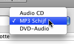
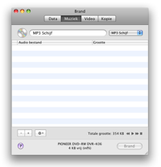
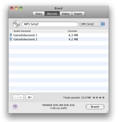
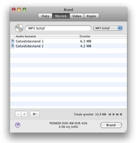
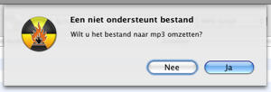

Muziek schijven branden
Brand kan Audio-CD's creëren, maar ook de steeds
populairdere MP3 schijven. Audio-CD's kunnen alleen op CD's worden
gebrand, MP3 schijven daarentegen kunnen op alle schijven worden
gebrand. Daarnaast kan Brand ook een minder voorkomend formaat branden,
DVD-Audio schijven. Er zijn DVD-spelers die deze schijven kunnen
afspelen. Deze schijven kunnen audio in extra hoge kwaliteit bevatten.
Direct ondersteunde formaten voor deze schijven zijn wav en flac
bestanden.
Audio-CD's branden:
1 Selecteer Audio CD
Selecteer Audio CD in het popup menu.

2 Selecteer muziek bestanden
Selecteer QuickTime ondersteunde bestanden (video bestanden kunnen ook,
alleen het geluid daarvan wordt gebruikt)
Let op: beveiligde geluidsbestanden worden niet ondersteund.

3 Sleep ze in de lijst
Sleep de geselecteerde bestanden in de lijst, Brand zal nagaan of de
bestanden kunnen worden gebruikt.
 

4 Klik op Brand
Hierdoor word een dialoog getoond.

5 Kies opties
Kies hier de voor de opties tijdens het branden gebruikt moeten worden.
Voor meer brand instellingen zie de "Voorkeuren" onder het Brand menu.

6 Brand de schijf
Klik op Brand om de schijf te branden.

7 Brand
gaat nu de schijf branden
Tijdens
het branden wordt een dialoog getoond met de voortgang.

MP3 / DVD-Audio schijven branden:
1 Selecteer MP3 Schijf of DVD-Audio
Selecteer MP3 Schijf of DVD-Audio in het popup menu.

2 Selecteer geluidsbestanden
Selecteer geluids- en videobestanden. De meesten formaten worden
ondersteund.
Let op: beveiligde geluidsbestanden worden niet ondersteund.
3 Sleep ze naar de lijst
Sleep
de geselecteerde bestanden in de lijst. Als de bestanden al het goede
formaat worden ze aan de lijst toegevoegd, anders vraagt Brand of ze
moeten worden omgezet.
 


4 Klik op Brand
Hierdoor word een dialoog getoond.
5 Kies opties
Kies hier de voor de opties tijdens het branden gebruikt moeten worden.
Voor meer brand instellingen zie de "Voorkeuren" onder het Brand menu.
6 Brand de schijf
Klik op Brand om de schijf te branden.
7 Brand
gaat nu de schijf branden
Tijdens
het branden wordt een dialoog getoond met de voortgang.